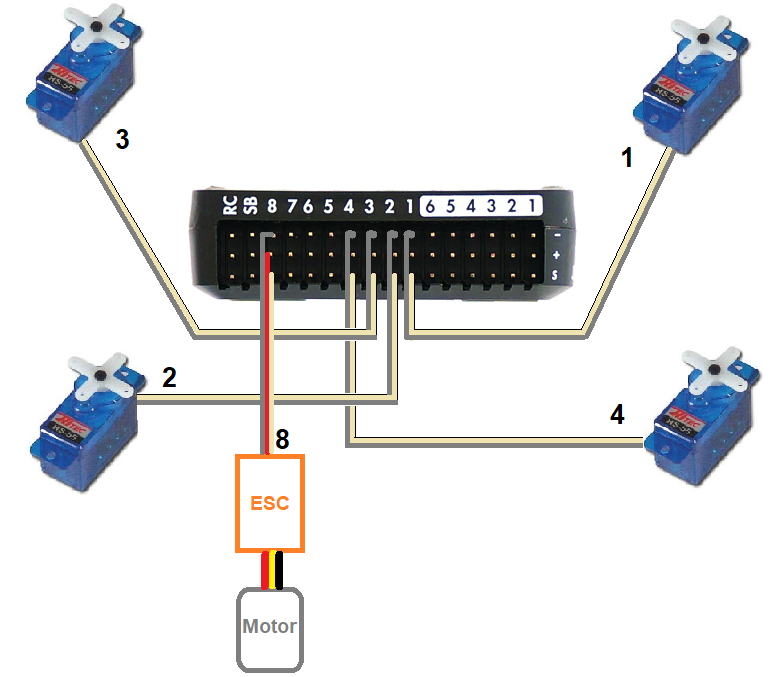
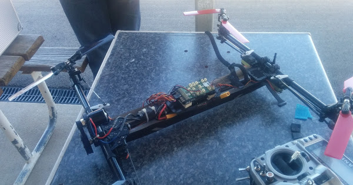

HeliQuads (Variable Pitch Multicopters)¶
ArduPilot supports HeliQuads, also called Collective Pitch Quadcopters or Variable Pitch Multicopters.

Note
Heli quad requires a traditional helicopter as the base firmware. It is available for download from the firmware server. When Copter is compiled, it now generates both traditional helicopter and multirotor firmware.
These vehicles use independently controlled collective pitch on each of 4 rotors, with a single electric motor that powers all 4 rotors at the same speed via belts and a torque tube. It is highly aerobatic, capable of inverted flight but can suffer from high vibration levels.
Where to Buy¶
WLtoys Assassin V383 is available from retailers including WLtoys.eu
Connecting and Configuring¶
{kind=link}
each servo should be connected using the same outputs that would be used for motors on a regular multicopter (see order here)
the motor’s ESC should be connected to the autopilot’s channel 8 output
traditional helicopter firmware should be loaded onto the vehicle.
If using the WLToys Assassin V383 a parameter file is available here and can be used to set all parameters immediately. For other builds these are the standard params that should be set:
FRAME_CLASS to 13 (HeliQuad)
FRAME_TYPE to 1 (“X” if front right motors spins counter clockwise) or 3 (“H” if front right motor spins clockwise)
Similar to a traditional helicopter an auxiliary switch should be set to “Motor Interlock” to turn on/off the motor. Normally this is channel 8 so you could set RC8_OPTION to 32.
Videos¶
Inverted flight test
Picture of CanberraUAV vehicle
